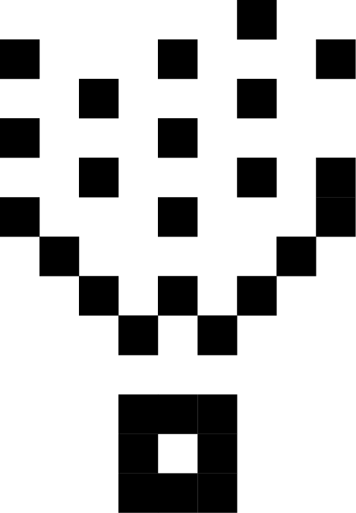
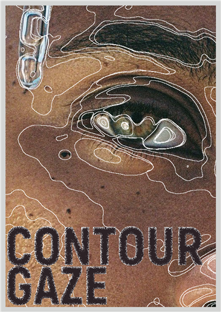
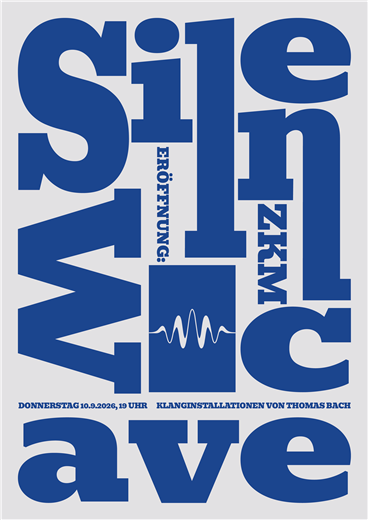
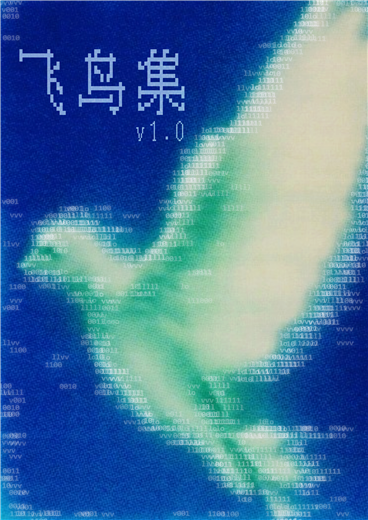
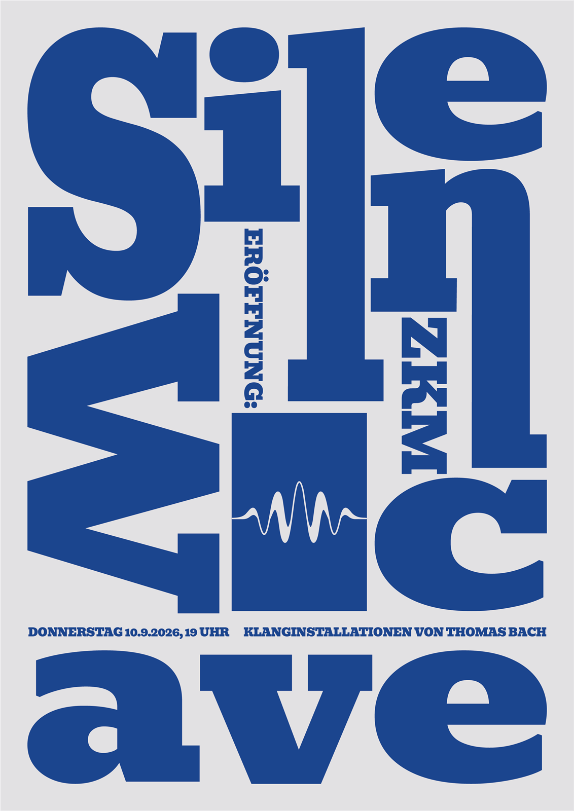
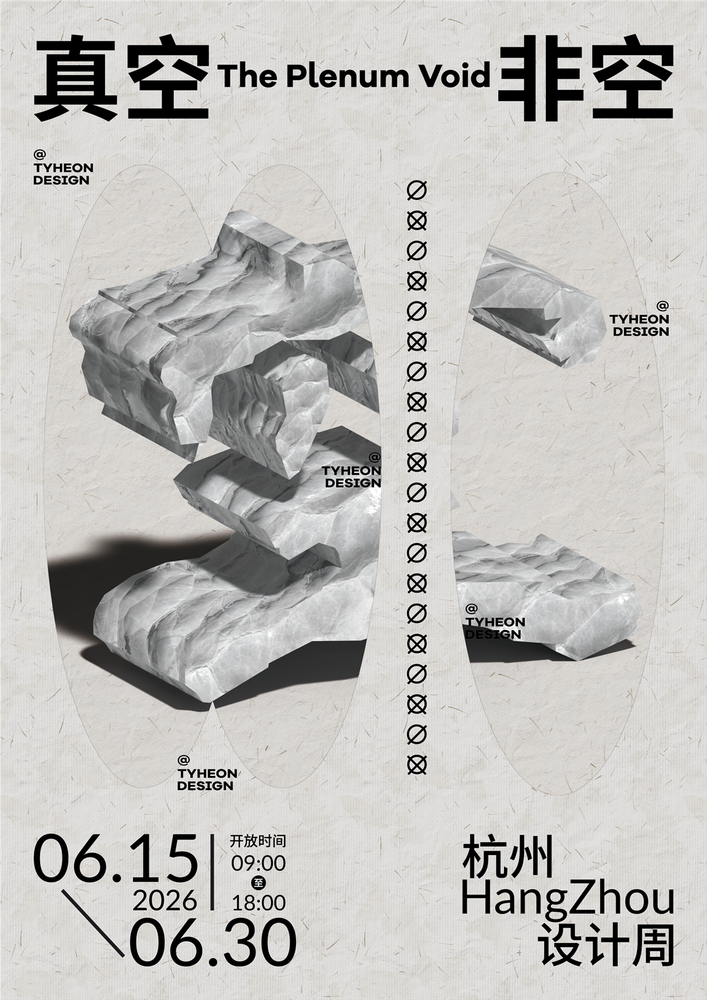

自研一套应用于品牌咨询和营销策划领域的可执行知识系统，
再用同一套方法，完成四个真实的品牌案例。
一套应用于品牌咨询和营销策划领域的可执行知识
Marsala 不是一份方法论清单，而是一套能把策略项目从头跑到尾的操作系统：从项目诊断、研究拆解，到创意输出与经营审查，每个环节都有对应的模块、工具与审查关卡。
由客户总监统一调度项目进程，保证判断一致、口径统一。
品牌策略、竞品研究、消费者洞察、创意方向、媒介策略、经营审查。
证据治理与审查贯穿每个结论，让每一个判断都有出处。
| 能力维度 | 对应案例 |
|---|---|
| 品牌定位推导 | The Ordinary 全案（九道闸门） |
| 品牌资产审计 | The Ordinary 全案（Aaker 五维度） |
| 竞品分析 | 功效护肤赛道三层纵深分析 |
| 消费者洞察 | lululemon Censydiam 动机分析 |
| Big Idea 开发 | Patagonia 创意拆解 |
| 策略到创意转换 | The Ordinary 完整链 + Patagonia 行动先行 |
当品牌行为已经进化到「科学基准线」，品牌叙事还停留在「成分透明」——一次九道闸门驱动的定位重构。
「科学透明 / 成分民主」——核心但正在漂移，需要重新定义边界。
O. Lab 创新实验室、酵母发酵技术、ELC 集团技术储备、临床数据。
「成分+浓度」命名历史、实验室美学、从反建制到体系化的转型叙事。
关键动作：把「成分+浓度」命名从定位层降为故事层、极简包装降为证明点，让新定位入主定位层——不再混淆「我们曾经是谁」和「我们正在成为谁」。
| 候选 | 内容 | 去留 |
|---|---|---|
| A | 成分护肤民主化 | 保留，降级为历史定位 |
| B | 科学护肤基准线 | 保留 |
| C | 成分透明运动 | 淘汰 |
| D | 尖端技术普及者 | 保留 |
| E | 问题肌解决方案 | 保留 |
| F | 第一瓶精华 | 淘汰 |
淘汰理由：C「运动」有终点而品牌没有，ELC 母公司也不适合反行业运动定位；F 与「GF 15% / Volufiline」等进阶产品行为矛盾。收敛至 B / D / E。
D（尖端技术普及）与 E（问题肌解决方案）都是 B（科学基准线）的下游执行——B 是唯一的定位候选。
如果 TO 发布 ¥200+ 产品后消费者反应是「背叛」而非「还是比竞品便宜」，定位不成立。2023 年粉红精华（$17）已实际通过过一次测试。
The Ordinary 是功效护肤的科学基准线。任何比它贵的产品，都必须解释贵在哪里。
「好护肤品不需要那么多钱。我们知道每个成分的成本——我们有责任告诉你，你付的钱去了哪里。」
「定价标签」系列：每个产品标注实际成本、对比同类竞品价格；「基准宣言」品牌片：视觉语言用标尺、量杯、砝码。
The Truth Should Be Ordinary 平台深度长文 · TikTok / Instagram 成分成本对比短视频 · 包装附「价格透明卡」 · 户外标尺视觉（一端的 TO 价格 vs 另一端的他们价格）。
消费者比较竞品时主动追问溢价理由 · 「TO 价格」成为比价参考 · 竞品被迫在官方渠道回应定价逻辑 · 部分消费者因「不值得多付」而非「便宜」转向 TO。
结论：每一个下游环节都能从上游自然推导，没有断裂——链检验通过。
| 问题 | 回答 |
|---|---|
| 增长 | 基准线随品类扩大自动增值，并为价格上探提供逻辑出口：基准 ≠ 便宜，基准 = 合理 |
| 利润 | 消费者买到的是「没花冤枉钱」的公平感，比价格敏感型忠诚更抗通胀、更抗竞品降价 |
| 壁垒 | ELC 成本结构 + 十年透明信誉 + O. Lab 内容资产，沟通可以复制，这些复制不了 |
| 老客 | 风险真实存在，需要一次「我们升级了，不是背离了」的正式沟通 |
| 要素 | 新叙事 |
|---|---|
| 使命 | 让每个人用合理价格获得科学护肤——「合理」不再由品牌说了算 |
| 愿景 | 成为全球功效护肤的基准线——想知道靠谱护肤品该值多少钱时，人们看 The Ordinary |
| 价值观 | 科学诚实 · 价格诚实 · 标准诚实 |
| 人格 | 实验室里告诉你真相的研究员——不冷漠，但不讨好 |
一切测量都需要基准：温度有摄氏零度，长度有一米，功效护肤也需要一个基准。The Ordinary 就是那把尺子。
KV：一支 TO 精华旁边放一把标尺，文案「量一量你付的钱」。
「成分重叠度 80%，一个 $10，一个 $80。我们只是好奇：剩下那 $70 去了哪里？」
「1755 年，我们知道了一米有多长。2026 年，我们该知道一瓶精华值多少钱。」
「基准线」被理解为「低端线」；ELC 身份削弱挑战者可信度；竞品模仿透明定位；价格上探引发老用户反弹。
¥200+ 产品发布后核心情绪是「背叛」；消费者用竞品价格而非 TO 价格做基准；竞品复制成本透明后差异消失。
撤回外部定位表达 → 保留产品策略 → 从「公开成本结构」退到「成本结构优化」。
用生意、产品、传播三层纵深，把 8 个竞品放进一张地图，找出赛道里真正没人占的位置。
| 指标 | 数据 | 解读 |
|---|---|---|
| 市场规模（2024） | 广义功效护肤约 1000-1200 亿元 | 占护肤品整体约 23%，采用广义口径 |
| 赛道增速 | CAGR 约 15-25% | 护肤品整体同比下滑约 2.8%，增速差约 15-20 个百分点 |
| 集中度 | CR5 约 45-50% | 按品牌统计头部集中；按企业集团统计约 25-30%，格局仍分散 |
| 阵营 | 品牌 | 核心单品 | 价格带 | 2024 趋势 |
|---|---|---|---|---|
| 国际 | 修丽可 | CE 精纯精华 | ¥300-1720 | 稳健 |
| 国际 | 理肤泉 | B5 修复霜 | ¥100-400 | 稳健 |
| 国内上市 | 薇诺娜 | 舒敏保湿特护霜 | ¥100-600 | -5.45% |
| 国内上市 | 珀莱雅 | 红宝石精华 | ¥100-500 | 稳健增长 |
| 国内上市 | 可复美 | 胶原棒 | ¥150-500 | +62.9% |
| 国内上市 | 润百颜 | 白纱布屏障次抛 | ¥100-400 | -22.63% |
| 新锐 | HBN | 视黄醇精华乳 | ¥100-400 | +6.9% |
| 基线参考 | The Ordinary | 高浓度单一成分 | ¥50-200（海外） | 全球稳健 |
可复美（+62.9%）与珀莱雅领跑，薇诺娜与润百颜下滑——敏感肌赛道进入存量洗牌，增长动力已从「敏感肌」转向「抗衰」与「修护」。
几乎每个品牌都在讲成分，差异化空间只剩「为什么是你的这个成分」。三大品类陷阱：敏感肌拥挤、抗衰泛化、次抛同质化。
拥挤区：科学/临床话语、敏感肌场景、成分+功效组合拳。空白区：价格诚实沟通、反营销内容、成分民主化叙事——均无人占据。
高专业度
↑
修丽可 │ （空白区）
¥300-1600 │
────────────────────┼──────────────────────→
高价格 │ 低价格
│
薇诺娜/可复美 │ 珀莱雅/HBN/理肤泉
¥100-600 │ ¥100-500
│
（空白区） The Ordinary（海外）
↓ ¥50-200
低专业度（品牌宣称层面）
横轴 = 价格，纵轴 = 专业度（品牌宣称层面）。右上「空白区」= 低价 × 高专业，是「科学正统的极致性价比」的机会位；The Ordinary 因不做科学权威叙事，目前落在右下。
它对这个赛道最大的参照价值不是卖什么产品，而是证明了一件事：在被「科学权威」笼罩的品类里，「把定价权还给消费者」可以成为一种品牌定位。没有医生背书、没有临床广告、没有明星代言——却让消费者觉得「这是我自己的选择，不是被说服的」。这个逻辑在中国功效护肤市场尚未被任何品牌占据。
当品牌从品类专家变成生活方式品牌，消费者研究框架该怎么改——用动机分层回答这个问题。
2024 年 lululemon 中国营收首次突破 10 亿美元，门店超 130 家（计划 2026 年达 220 家）。高速扩张的同时，消费者结构正在剧烈变化——这是研究它最好的时机。
| 市场 | 支配动机 | 品牌与消费者的关系 |
|---|---|---|
| 北美（早期） | 掌控 + 活力 | 「我运动，所以穿 lululemon」——运动的工具 |
| 中国（当前） | 认可 + 掌控 | 「穿 lululemon，说明我是什么样的女性」——身份的符号 |
支配动机：掌控。每周 3-5 次瑜伽，为功能付费。品牌 = 工具，忠诚于品类场景而非品牌本身。
支配动机：认可。运动与通勤混搭，Define Jacket / Scuba 为核心单品。品牌 = 身份标签，为身份付费。
支配动机：社交愉悦 + 归属。偶尔运动，购买基于「好看」「舒服」「姐妹们都在穿」。品牌 = 社交货币。
支配动机：掌控 + 认可。商务休闲混搭为主，ABC 裤为核心单品。品牌 = 聪明的舒适选择。
「摸到面料」和「穿到身上」是价格到价值的转换器——没有试穿，¥750 的瑜伽裤永远显得贵。线下门店的角色不是销售，是免费体验中心。
从「试试看」到「信任品牌」的转折点——第一条可能是冲动或朋友推荐，第二条是自己选择的。首次购买后的 30 天跟进是增长杠杆。
「穿 lululemon 去办公室」不是品牌稀释，是中国市场的核心增长动力。
Align / Wunder Train 讲面料科技；Define / Scuba 讲「什么样的女性穿这个」——沟通逻辑完全不同。
中国社群的价值是「看到这么多优秀的女生都穿 lululemon，我和她们是一类人」。
一个敢说「别买」的品牌，为什么卖得比谁都好——把品牌价值观变成创意引擎的方法论。
| 原则 | 检验 |
|---|---|
| 策略性 | 与品牌定位完全一致，不是附加在品牌上的 campaign，是品牌本身 |
| 延展性 | 同一个 Big Idea 跨形式、跨媒介、跨年份：反广告、修补服务、政治表态、捐出公司 |
| 记忆性 | 「那个说别买自己衣服的品牌」——一句话就能识别 |
| 差异性 | 只有 Patagonia 能用——它用 50 年的行为建立了「说别买是真的在关心」的信任 |
黑色星期五，纽约时报整版广告，详述一件夹克的环境成本。结果：销量增长约 30%（9 个月）。创意本质是商业行为在传播层的表达——它真的希望消费者少买。
官网首页全黑，一行白字。媒介选择即策略：占领自己的销售渠道做政治表态，零媒体费，每个想买东西的人都被迫看到。克制 = 自信。
创始人把公司所有权转让给地球：2% 投票权归信托，98% 利润用于环保。这不是 campaign，是公司法律结构的根本改变——创意只是把这件事告诉世界。
每一次创意爆发前面都有一个真实的商业决策。如果品牌没做过值得传播的事，再好的创意也救不了。
创意不需要「消费者喜欢」，只需要「和品牌一致」。怕的不是得罪人，是背叛自己。
黑五的销量、新品的收入、家族的财富——每一次牺牲都是一次信任充值。
| 复制层级 | 需要什么 | 难度 |
|---|---|---|
| 文案层 | 换一个产品名 | 极低 |
| 行为层 | 真的掏钱、真的修衣服、真的改变商业模式 | 极高 |
| 信誉层 | 50 年持续做同一件事 | 不可能复制 |
没有客户，没有外部 deadline——自己给自己下 Brief，再自己交付。Marsala 的两种工作模式，各跑一遍完整闭环。
自设 Brief 实践（营销策划模式）：不卖促销，卖「正名」——你的辣条，原名叫麻辣。
国庆 7 天是 2026 年最后一个「年轻人的长假」，也是辣条生日月——辣条 1998 年 10 月在湖南平江出生，本名「麻辣」。战役只做一件事：让全国人在 10 月记住——辣条是中国发明的，本名叫麻辣，原名持有者是麻辣王子。
10 月限定「出生证明」包装：1998 年 10 月 · 湖南平江 · 原名：麻辣 · 发明人：邱平江 / 李猛能 / 钟庆元。10 月 31 日下架，制造「这个月才有」的理由。
发明人出镜讲当年（1998 年洪水、用面粉替代豆粉、四川火锅的麻辣灵感）——内核是冷知识反差，不是纪录片、不说教、不用「爱国」大词。
正名 UGC：「辣条，原来不叫辣条？」；10 月生日的人自动获得「和辣条同月生」的梗；晒出生证明即参与正名。
长沙体验店 / 辣条博物馆「辣条生日会」联动，店内「麻辣王擂台」承接正名话题。
三条红线：不点名竞品（留白，让观众自己想起是谁）；不碰调休怒火；不做「天热吃辣」——正名卖的是身份，不是辣度。
9 月中下旬：抛出「辣条，原来不叫辣条？」，用这个惊讶钩做数据测试，验证叙事接不接得住。
9/28-10/7：正名宣言发布、限定包装全渠道上架、发明人出镜系列上线、UGC 晒证集中爆发。
10/8-10/31：搜索占位与「辣条原名」科普持续沉淀；内容进入博物馆 / 体验店，变成长期资产。
「辣条原来不叫辣条」这个意外是否成立。钩子必须是「X 不是 X」的惊讶（熟悉的词被推翻），不是「告诉你一个新词」。推翻它需要预热期测试钩子的互动 / 收藏率数据。
情绪载体选「正名」（不接负情绪、有产品必然）；机制选「生日月正名」（只有 10 月能做，时间独占）；创意性质是「判断」而非「点子」——押「麻辣是辣条的本来面目」，可证伪。
若惊讶成立但消费者不关心「谁持有」→ 品牌落点前移到包装与口播；若发明人背书不被当回事 → 改用「品牌名 = 品类原名」的自我论证。
自设 Brief 实践（品牌咨询模式）：把一家被媒体定性「失败」的公司，拆成一个可验证的生意命题。
业务目标：决定文和友未来 3-5 年的生意形态——先定「靠什么活」，再谈品牌。品牌主问题：文化公司、餐饮公司、商业地产，三个身份收敛成一个，并承担它的代价。约束：只剩长沙一家店、B 轮资本压力、媒体已定性「失败」。
A 单店深耕（基本盘）/ B 自有品牌食品零售（未验证，但已有产品事实与电商项目）/ C 在地文化能力输出（远期期权）。结论：押 B，A 是基本盘，C 是期权。
「我们是餐饮/文化公司」「扩张 = 复制长沙店」「文和友 IP 可以迪士尼化」——三个前提全部失效。迪士尼有产权化 IP 体系；文和友的 IP 是一座搬不走的楼，不可产权化。
Seven Powers 全空：有知名度但无溢价权、无独占资源、无网络效应、无转换成本。唯一可能的护城河只有一个字：真——谁先让消费者相信「这是真的市井，不是布景」，谁拿走解释权。
五个候选：打卡地标（现状不是出路）/ 正宗长沙美食（本地不认、复购为零）/ 市井文化内容运营商（能力未验证，降为远期）/ 长沙味道食品品牌（活）/ 餐饮界迪士尼（无 IP 产权体系，死）。
定位「记忆策展人」→ 传播主张「这里不是景」→ 创意（真老店入驻、手艺人在场、本地人推荐）→ 媒介（小红书本地认证、游客攻略占位）→ 行为预测（本地回流率↑、预包装复购↑、「假」类负面↓）。
引入真老店 + 本地认证后 90 天内，打卡量显著下降或「假」类负面不降——定位撤回。押「真」的理由：出片那条路，广深已经替文和友试过了，结果是关店。
游客到底在乎「真」还是「出片」。推翻它需要：真老店改造试点后 90 天的打卡量与负面词占比变化。若游客不在乎真——定位降级为「出片第一」，生意退回 A 路径。
若「长沙味道纪念品」是伪需求（游客只在店里买、回家不买）→ 退回单店深耕 + 内容更新，定位不变但承诺缩水。
核心观点：做消费者研究的最终产出不是用户画像，而是一张「用户卡住的地图」。
「人是情境性的，不是标签性的。用户画像把一个人的全部复杂性压缩成一张静态照片——用一把对付照片的剑，去砍一个移动的靶子。」
赞 40 · 收藏 47 · 评论 8 · 涨粉 5 · 阅读全文
核心观点：免费不是「价格为零」，而是一个完全不同的心理类别——交易计算被跳过，你直接伸手拿了。
「理性知道所有的套路。但决策在理性赶到之前就已经做完了。」
赞 27 · 收藏 28 · 评论 11 · 涨粉 3 · 阅读全文
核心观点：营销费用最高的品牌，常常不是最成功的品牌，而是产品最留不住人的品牌。
「营销能做什么？能让不知道你的人知道你。能让对你无感的人产生一点好奇。能让已经在犹豫的人下定决心。就这些。」
赞 29 · 收藏 27 · 评论 1 · 涨粉 4 · 阅读全文
核心观点：接受了「没人在乎你」的品牌，反而会被人真正在乎。
「消费者的生活才是舞台，你只是一个路过的配角。品牌不能制造感受，品牌只能在感受发生的瞬间刚好在场。」
赞 36 · 收藏 42 · 评论 0 · 涨粉 4 · 阅读全文
核心观点：品牌不是创造出来的，是被发现的。
「品牌不是自我表达，是被选择。没有行动的故事叫文案，不叫品牌。」
赞 21 · 收藏 29 · 评论 0 · 涨粉 6 · 阅读全文






用 AI 编写的媒介策划工具：按渠道效率自动拆解预算，支持正推与反推两种模式。